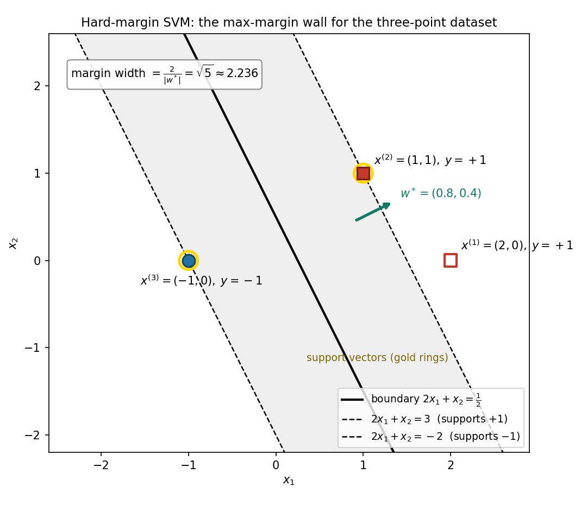

Chapter 32: Hard-margin SVM
Part IV — Machine Learning Techniques. Builds on: linear boundaries (§31.1), the perceptron’s margin \(\gamma\) (§31.5), Lagrange/KKT machinery (Ch 11, Ch 13), and the SVM preview (§13.15). Sources: MLT Week 10 lecture slides (hard-margin SVM derivation) and the MLT Week 10 practice assignment.
32.1 The problem with “any” wall: which separator?
The perceptron (§31.2–§31.5) finds a separating wall and stops. If the data is linearly separable, infinitely many walls separate it — the perceptron just grabs the first one its update order stumbles into, then stops dead (correct points cause no updates, §31.5).
The lecture’s slide 1 asks the uncomfortable question: given that we prefer classifiers with large margin, can we directly find them? Its observation:
- The perceptron’s mistake bound depends on the margin of the best possible separator \(w^\star\) — the one we never actually compute.
- The wall the perceptron does find need not be \(w^\star\). It can be any wall that happens to work — including one that grazes the data.
So the perceptron answers “find me a wall”, and this chapter answers the harder question: of all the walls that separate the classes, which one should we pick?
The SVM’s answer = the wall farthest from both classes — the max-margin wall. The perceptron’s practice-assignment margin \(\gamma\) (§31.5) was the preview: there we measured how much room a separator leaves; here we optimize that room.
Basically, … “The perceptron is the first apartment you toured that had a roof. The SVM is the apartment farthest from both noisy neighbours. Same street (linear walls) — much better address.”
32.2 The margin: functional, geometric, and the canonical form
For a wall \(w^T x + b = 0\) and a labelled point \((x^{(i)}, y^{(i)})\), \(y^{(i)} \in \{-1, +1\}\):
- Functional margin = \(y^{(i)}(w^T x^{(i)} + b)\). Positive means correct, and its size says “how correct” — but it is scale-sensitive: replace \((w, b)\) by \((2w, 2b)\) and every functional margin doubles while the wall never moves.
- Geometric margin = \(\dfrac{y^{(i)}(w^T x^{(i)} + b)}{\lVert w \rVert}\). This is the true perpendicular distance from the point to the wall, signed by correctness. Scaling \((w,b)\) leaves it unchanged — it measures the wall, not the numbers.
- The margin of the wall = the smallest geometric margin over the data: \(\gamma = \min_i \dfrac{y^{(i)}(w^T x^{(i)} + b)}{\lVert w \rVert}\).
The scale problem in (i) is the whole game. Fix it by choosing a scale: demand that the closest point(s) sit at functional margin exactly \(1\):
\[\boxed{\min_i y^{(i)}(w^T x^{(i)} + b) = 1} \qquad \text{(canonical form)}\]
This is always achievable for a separating wall — just rescale \((w, b)\) until the minimum functional margin equals \(1\). The wall doesn’t move; only the ruler changes.
Note: the canonical form pins down a unique \((w, b)\) per wall. That is why you may rescale the equation \(w^T x + b = 0\) by a constant but may not rescale \(w\) alone — scaling \(w\) alone changes which wall the canonical constraints describe (practice assignment, Q3).
With the canonical scale, the geometry becomes clean. The closest points satisfy \(w^T x + b = \pm 1\) — two hyperplanes parallel to the wall, one per class. These are the supporting hyperplanes. The distance between two parallel planes \(w^T x + b = c_1\) and \(w^T x + b = c_2\) is \(|c_1 - c_2|/\lVert w \rVert\) (project the gap onto the unit normal \(w/\lVert w \rVert\)). So:
\[\boxed{\text{width} = \frac{1 - (-1)}{\lVert w \rVert} = \frac{2}{\lVert w \rVert}}\]
and the margin on each side is \(\gamma = 1/\lVert w \rVert\). Maximizing the margin is now purely about making \(\lVert w \rVert\) small.
Basically, … “Functional margin is the score in made-up points — double the numbers, double the score, same wall. Geometric margin is the score in metres — it can’t be faked. The canonical form just declares ‘the nearest point scores exactly 1’, which fixes the ruler. After that, the whole gap between the two classes is \(2/\lVert w \rVert\): a shorter \(w\) means a wider street.”
32.3 The hard-margin primal: from “widest street” to \(\min \frac12\lVert w\rVert^2\)
Maximize the width \(2/\lVert w \rVert\) over all separating walls:
- Maximizing \(2/\lVert w \rVert\) \(\iff\) minimizing \(\lVert w \rVert\) \(\iff\) minimizing \(\lVert w \rVert^2\) (monotone transforms; the optimum \((w, b)\) is the same).
- The \(\frac12\) is cosmetic: \(\frac12\lVert w \rVert^2\) differentiates to \(w\), keeping every gradient clean (§13.15’s Hessian remark: the Hessian is the identity).
- “Separating wall” in canonical form = every point’s functional margin is at least \(1\).
The hard-margin SVM primal:
\[\boxed{\min_{w, b}\ \frac{1}{2}\lVert w \rVert^2 \quad \text{s.t.}\quad y^{(i)}(w^T x^{(i)} + b) \ge 1\ \ \forall i}\]
Note (when this has no answer). The constraints demand a wall with every point on the correct side with functional margin \(\ge 1\). If the data is not linearly separable, no such \((w, b)\) exists — the problem is infeasible. The hard-margin SVM, like the perceptron (§31.5), needs separable data; the lecture’s closing question (“how to adapt the SVM when data has outliers?”) is exactly this weakness, and Chapter 33’s soft margin is the answer.
Basically, … “Widest street = shortest \(w\). The \(\frac12\) and the square are just tidying up so the calculus comes out nice. And the fine print: this whole problem only makes sense if a separating wall exists at all — one point on the wrong side and there is no feasible answer.”
32.4 The dual: same problem, mirrored
The primal is a quadratic objective with linear constraints — exactly the shape Chapters 11 and 13 were built for (§13.15(i): strong duality holds, so the dual agrees with the primal). The lecture derives the dual in four moves:
Move 1 — the Lagrangian. With one multiplier \(\alpha_i \ge 0\) per constraint, written in the \(g_i \le 0\) shape (\(g_i(w, b) = 1 - y^{(i)}(w^T x^{(i)} + b)\), §13.2):
\[L(w, b, \alpha) = \frac{1}{2}\lVert w \rVert^2 + \sum_{i=1}^{n} \alpha_i \big(1 - y^{(i)}(w^T x^{(i)} + b)\big).\]
Move 2 — the primal as min-max. By §13.3’s trick, \(\max_{\alpha \ge 0} L\) is \(\frac12\lVert w \rVert^2\) when \((w, b)\) is feasible and \(+\infty\) otherwise. So the primal is \(\min_{w,b} \max_{\alpha \ge 0} L\).
Move 3 — swap. For convex \(f\) and \(g\) (quadratic objective, linear constraints), min and max swap (§13.4, §13.7):
\[\min_{w,b}\ \max_{\alpha \ge 0}\ L(w, b, \alpha) \quad = \quad \max_{\alpha \ge 0}\ \min_{w,b}\ L(w, b, \alpha).\]
The right side is the dual problem.
Move 4 — the inner min, by stationarity. Fix \(\alpha \ge 0\) and minimize over \((w, b)\) (unconstrained now — set gradients to zero, §11.3):
\[\frac{\partial L}{\partial w} = w - \sum_{i=1}^{n} \alpha_i y^{(i)} x^{(i)} = 0 \quad\Longrightarrow\quad \boxed{w^\star = \sum_{i=1}^{n} \alpha_i y^{(i)} x^{(i)}},\]
\[\frac{\partial L}{\partial b} = -\sum_{i=1}^{n} \alpha_i y^{(i)} = 0 \quad\Longrightarrow\quad \boxed{\sum_{i=1}^{n} \alpha_i y^{(i)} = 0}.\]
Substituting \(w^\star\) back into \(L\) and simplifying (the \(\frac12\lVert w \rVert^2\) and the \(-\sum \alpha_i y^{(i)} w^T x^{(i)}\) terms collapse into \(-\frac12\sum_{i,j} \alpha_i\alpha_j y^{(i)}y^{(j)} {x^{(i)}}^T x^{(j)}\)):
\[\boxed{\max_{\alpha \ge 0,\ \sum_i \alpha_i y^{(i)} = 0}\ \ \sum_{i=1}^{n} \alpha_i \;-\; \frac{1}{2}\sum_{i,j=1}^{n} \alpha_i \alpha_j\, y^{(i)} y^{(j)}\, {x^{(i)}}^T x^{(j)}}\]
Note (notation vs the lecture). The lecture folds the bias into \(w\) (augmented \(\tilde x\)), so its dual has only \(\alpha \ge 0\). Keeping \(b\) explicit — as the canonical form of §32.2 does — adds the stationarity condition \(\sum_i \alpha_i y^{(i)} = 0\). Same problem, one extra bookkeeping line.
Basically, … “The primal asks: smallest \(w\) among all feasible walls. The dual asks a mirror question: how much ‘vote’ \(\alpha_i\) should each datapoint get? Stationarity says the winning \(w\) is just a weighted vote of the datapoints — and once you plug that back in, the data appears only as dot products \(x^{(i)T} x^{(j)}\). That last fact is the whole reason kernels will work in Chapter 33.”
32.5 KKT and support vectors: only the wall-huggers vote
At the optimum, the four KKT conditions (§13.8–§13.9) hold. For the SVM they say:
- Stationarity: \(w^\star = \sum_i \alpha_i^\star y^{(i)} x^{(i)}\) and \(\sum_i \alpha_i^\star y^{(i)} = 0\) (§32.4).
- Primal feasibility: \(y^{(i)}(w^{\star T} x^{(i)} + b^\star) \ge 1\) for all \(i\) — every point correctly placed with functional margin \(\ge 1\).
- Dual feasibility: \(\alpha_i^\star \ge 0\) for all \(i\).
- Complementary slackness: \(\alpha_i^\star \cdot \big(1 - y^{(i)}(w^{\star T} x^{(i)} + b^\star)\big) = 0\) for all \(i\) (§11.7, §13.11).
From (iv): if \(\alpha_i^\star > 0\) then \(y^{(i)}(w^{\star T} x^{(i)} + b^\star) = 1\) — the point sits exactly on its supporting hyperplane. These points are the support vectors: the wall-huggers that pin the margin in place.
The subtle direction (practice assignment, Q1): the converse is not guaranteed. A point can sit exactly on a supporting hyperplane and still have \(\alpha_i^\star = 0\) — complementary slackness only forces the product to zero, and \(0 \cdot 0 = 0\) is fine. So: every support vector lies on a supporting hyperplane, but not every point on a supporting hyperplane is a support vector.
Consequences (the lecture’s “what have we gained”, slide 7):
- \(w^\star\) is a sparse linear combination of the data — only support vectors contribute; every other point gets \(\alpha_i^\star = 0\) and drops out of the answer entirely.
- The dual sees the data only through inner products \({x^{(i)}}^T x^{(j)}\) — the doorway to kernels (Chapter 33).
- The decision function needs only the support vectors:
\[\boxed{\hat y(x_{\mathrm{test}}) = \operatorname{sign}\!\left(\sum_{i:\ \alpha_i^\star > 0} \alpha_i^\star\, y^{(i)}\, {x^{(i)}}^T x_{\mathrm{test}} + b^\star\right)}\]
- Recover \(b^\star\) from any support vector \(j\): \(y^{(j)}(w^{\star T} x^{(j)} + b^\star) = 1\) gives \(\boxed{b^\star = y^{(j)} - w^{\star T} x^{(j)}}\).
Note (prediction inside the margin). A test point landing between the supporting hyperplanes still gets a label — the sign of \(w^{\star T} x_{\mathrm{test}} + b^\star\) decides, margin or no margin (practice assignment, Q6). The constraints shaped the wall during training; they don’t gate predictions.
Basically, … “Complementary slackness is the bouncer: a datapoint either has voting power (\(\alpha_i > 0\)) and then it must be pressed against the margin wall, or it sits safely away and gets zero vote. The final wall is built from the wall-huggers alone — delete every other point and nothing changes. (Careful: hugging the wall doesn’t guarantee a vote — a point can lean on the margin line with \(\alpha_i = 0\).)”

32.6 Worked example: three points, the dual solved by hand
Data: \(x^{(1)} = (2, 0),\; y^{(1)} = +1\); \(\quad x^{(2)} = (1, 1),\; y^{(2)} = +1\); \(\quad x^{(3)} = (-1, 0),\; y^{(3)} = -1\).
Step 1 — guess which constraints bind. The margin will be pinned by the closest cross-class pair. Distances: \(\lVert x^{(2)} - x^{(3)}\rVert = \sqrt{5} \approx 2.236\); \(\lVert x^{(1)} - x^{(3)}\rVert = 3\). So try \(\alpha_1 = 0\) (point 1 sits safely beyond the margin) with points 2, 3 active.
Step 2 — the dual on the active set. With \(\alpha_1 = 0\), the constraint \(\sum_i \alpha_i y^{(i)} = 0\) gives \(\alpha_2 = \alpha_3 =: \alpha\). Dot products: \(x^{(2)T}x^{(2)} = 2\), \(x^{(3)T}x^{(3)} = 1\), \(y^{(2)}y^{(3)}\,x^{(2)T}x^{(3)} = (-1)(-1) = 1\). The dual objective:
\[\begin{aligned} D(\alpha) &= (\alpha_2 + \alpha_3) - \tfrac12\big(\alpha_2^2 \cdot 2 + \alpha_3^2 \cdot 1 + 2\alpha_2\alpha_3 \cdot 1\big) \\ &= 2\alpha - \tfrac12(2\alpha^2 + \alpha^2 + 2\alpha^2) = 2\alpha - \tfrac52\alpha^2. \end{aligned}\]
\(D'(\alpha) = 2 - 5\alpha = 0 \Rightarrow \boxed{\alpha^\star = (0,\ 0.4,\ 0.4)}\), \(D = 0.8 - 0.4 = 0.4\).
Step 3 — recover \(w^\star, b^\star\).
\[w^\star = 0.4\cdot(+1)\cdot(1,1) + 0.4\cdot(-1)\cdot(-1,0) = (0.4, 0.4) + (0.4, 0) = \boxed{(0.8,\ 0.4)}.\]
From support vector 2 (\(y^{(2)}(w^{\star T}x^{(2)} + b) = 1\)): \(0.8 + 0.4 + b = 1 \Rightarrow \boxed{b^\star = -0.2}\). Cross-check with support vector 3: \((-1)\big(0.8\cdot(-1) + 0 - 0.2\big) = (-1)(-1) = 1\) ✓.
Step 4 — verify everything (KKT). Functional margins \(y^{(i)}(w^{\star T}x^{(i)} + b^\star)\):
- Point 1: \(0.8\cdot 2 + 0 - 0.2 = 1.4 \ge 1\) ✓ (inactive, \(\alpha_1 = 0\) ✓),
- Point 2: \(0.8 + 0.4 - 0.2 = 1.0\) ✓ (active, \(\alpha_2 > 0\) ✓),
- Point 3: \((-1)(-0.8 - 0.2) = 1.0\) ✓ (active, \(\alpha_3 > 0\) ✓).
Complementary-slackness products \(\alpha_i(1 - \text{margin}_i)\): \(0\cdot(1-1.4) = 0\), \(0.4\cdot 0 = 0\), \(0.4\cdot 0 = 0\) ✓. Primal value \(\frac12\lVert w^\star\rVert^2 = \frac12(0.64+0.16) = 0.4\) = dual value \(0.4\) ✓ (strong duality). A numpy grid search over the dual feasible set confirms \(0.4\) is the maximum, attained at \((0, 0.4, 0.4)\) — see the review log.
Step 5 — the geometry. \(\lVert w^\star\rVert = \sqrt{0.8} = 2/\sqrt5\), so \(\boxed{\text{width} = 2/\lVert w^\star\rVert = \sqrt5 \approx 2.236}\). Supporting hyperplanes \(0.8x_1 + 0.4x_2 - 0.2 = \pm 1\), i.e. \(\boxed{2x_1 + x_2 = 3}\) and \(\boxed{2x_1 + x_2 = -2}\); boundary \(\boxed{2x_1 + x_2 = 0.5}\).
Step 6 — support vectors and a prediction. Support vectors = \(x^{(2)}, x^{(3)}\) (gold rings in the figure). Point \(x^{(1)}\) has \(\alpha_1 = 0\): it contributes nothing to \(w^\star\) and could be deleted without changing the answer. Test point \(x_{\mathrm{test}} = (0,0)\): \(\operatorname{sign}(w^{\star T}x_{\mathrm{test}} + b^\star) = \operatorname{sign}(-0.2) = \boxed{-1}\) — labelled even though it falls inside the margin band (cf. §32.5, Note).
Basically, … “Three points, and only the two hugging the gap matter. The dual said ‘give the two wall-huggers 0.4 votes each, the safe point gets nothing’, and out popped \(w^\star = (0.8, 0.4)\), \(b^\star = -0.2\), street width \(\sqrt5\). Primal and dual agree at \(0.4\) — the mirror told the truth.”
32.7 Strengths and limits (as the sources list them)
Strengths.
- A principled wall, not the first one found. Max-margin is a deliberate choice of separator; the assignment states max-margin classifiers “will generalize better than perceptrons” (practice Q8).
- Sparse answer. Only the support vectors decide — the rest of the dataset is dead weight after training (lecture, slide 9).
- The dual is the better game. \(n\) variables with “easier” constraints (§13.15(ii)), data entering only via inner products — which “will help one go from linear models to non-linear models in a very smooth way” (kernels, Chapter 33).
- Same family as perceptron and logistic regression. All three are linear, discriminative models with boundary \(w^T x + b = 0\) (practice Q7–Q8) — the SVM is the heavy machinery §29.8(iii) promised would beat KNN on hard tasks.
Limits.
- Separability or nothing. The hard-margin primal is infeasible the moment one point crosses into the wrong side — it is not robust to outliers (lecture’s closing question; practice Q8 notes the soft margin is robust where the perceptron merely “converges only in the linearly separable case”).
- No probabilities. Distance from the wall carries no confidence — unlike logistic regression, where farther from the boundary means a surer prediction (practice Q8).
- Heavier than the perceptron. The answer is a quadratic program, not a few online updates — the price of principled.
Basically, … “SVM’s pitch: the most defensible wall, decided by a handful of points, in a form that kernels can stretch. SVM’s price: it demands cleanly separable data, it never tells you how sure it is, and you pay for the principle with a real optimization problem.”
32.8 Where this goes next
One pointer, as promised: the lecture ends by asking how to adapt the SVM when data has outliers — “kernels can help but is not the right way to solve this” — and answers with the soft-margin primal (slack variables \(\xi_i\), the “bribe” each misbehaving point pays). Soft margins and the kernel trick are Chapter 33’s job.
Problem set
- Width and supporting lines. For the §32.6 solution \(w^\star = (0.8, 0.4)\), \(b^\star = -0.2\): (i) compute the margin width from \(2/\lVert w^\star\rVert\); (ii) write the two supporting hyperplanes and the boundary as \(2x_1 + x_2 = c\) for suitable \(c\); (iii) compute the perpendicular distance from \(x^{(1)} = (2,0)\) to the boundary and confirm it exceeds half the width.
- Scaling, canonical and otherwise. (i) If \((w, b)\) separates the data, show \((2w, 2b)\) gives the same wall, doubled functional margins, and unchanged geometric margins. (ii) In one line: what does the canonical condition \(\min_i y^{(i)}(w^T x^{(i)} + b) = 1\) buy you? (iii) Why is rescaling \(w\) alone (leaving \(b\)) forbidden — what breaks?
- The symmetric square. \(x^{(1)} = (1,1), y^{(1)} = +1\); \(x^{(2)} = (1,-1), y^{(2)} = +1\); \(x^{(3)} = (-1,1), y^{(3)} = -1\); \(x^{(4)} = (-1,-1), y^{(4)} = -1\). (i) By symmetry set \(\alpha_1 = \alpha_2 = \alpha_3 = \alpha_4 = \alpha\); write the dual objective and maximize it. (ii) Recover \(w^\star, b^\star\), the width, and the supporting hyperplanes. (iii) Which points are support vectors?
- Complementary slackness, both directions. (i) From \(\alpha_i^\star(1 - y^{(i)}(w^{\star T}x^{(i)} + b^\star)) = 0\), prove: \(\alpha_i^\star > 0 \Rightarrow y^{(i)}(w^{\star T}x^{(i)} + b^\star) = 1\). (ii) Explain, in the practice assignment’s words (Q1), why a point sitting exactly on a supporting hyperplane may still have \(\alpha_i^\star = 0\).
- Delete the bystander. Using §32.6’s numbers: (i) classify \(x_{\mathrm{test}} = (0,0)\) via the support-vector sum \(\sum_{i:\alpha_i>0} \alpha_i y^{(i)} {x^{(i)}}^T x_{\mathrm{test}} + b^\star\); (ii) delete \(x^{(1)}\) from the dataset and argue (no re-solving needed) that \(w^\star, b^\star\) and the prediction are unchanged — which KKT condition guarantees this?
- Three linear classifiers. List three similarities and three differences between the perceptron, logistic regression, and the hard-margin SVM (practice assignment, Q8).
Solutions
Attempt each problem first, then click a problem to reveal its worked solution.
Given \(w^\star = (0.8, 0.4)\), \(b^\star = -0.2\).
(i) Width. \(\lVert w^\star\rVert^2 = 0.64 + 0.16 = 0.8 = 4/5\), so \(\lVert w^\star\rVert = 2/\sqrt5\). Width \(= 2/\lVert w^\star\rVert = 2/(2/\sqrt5) = \boxed{\sqrt5 \approx 2.236}\).
(ii) The three lines. Supporting hyperplanes \(w^{\star T}x + b^\star = \pm 1\):
- \(0.8x_1 + 0.4x_2 - 0.2 = 1 \;\Rightarrow\; 0.8x_1 + 0.4x_2 = 1.2 \;\Rightarrow\; \boxed{2x_1 + x_2 = 3}\) (multiply by \(2.5\)),
- \(0.8x_1 + 0.4x_2 - 0.2 = -1 \;\Rightarrow\; 0.8x_1 + 0.4x_2 = -0.8 \;\Rightarrow\; \boxed{2x_1 + x_2 = -2}\).
Boundary \(w^{\star T}x + b^\star = 0\): \(0.8x_1 + 0.4x_2 = 0.2 \Rightarrow \boxed{2x_1 + x_2 = 0.5}\).
(iii) Distance of \(x^{(1)} = (2,0)\) from the boundary. Distance from \((x_1, x_2)\) to \(2x_1 + x_2 - 0.5 = 0\) is \(|2x_1 + x_2 - 0.5|/\sqrt{2^2 + 1^2}\). At \((2, 0)\): \(|4 - 0.5|/\sqrt5 = 3.5/\sqrt5 \approx \boxed{1.565}\). Half-width \(= \sqrt5/2 \approx 1.118\). Since \(1.565 > 1.118\), the point lies strictly beyond the \(+1\) supporting line — consistent with its functional margin \(1.4 > 1\) (geometric margin \(1.4/\lVert w^\star\rVert = 1.4\sqrt5/2 = 0.7\sqrt5 \approx 1.565\) ✓, same number both ways).
(i) Wall from \((2w, 2b)\): \(\{x : 2w^T x + 2b = 0\} = \{x : w^T x + b = 0\}\) — same set, same wall. Functional margin: \(y^{(i)}(2w^T x^{(i)} + 2b) = 2\,y^{(i)}(w^T x^{(i)} + b)\) — doubled. Geometric margin: \(\dfrac{2\,y^{(i)}(w^T x^{(i)} + b)}{\lVert 2w\rVert} = \dfrac{y^{(i)}(w^T x^{(i)} + b)}{\lVert w\rVert}\) — unchanged. (If \((w,b)\) already satisfied the canonical constraints \(y^{(i)}(w^Tx^{(i)}+b)\ge1\), doubling keeps them satisfied a fortiori; either way, the wall is unchanged.)
(ii) One line: the canonical condition fixes the ruler — it selects the unique scale \((w, b)\) per wall whose nearest point has functional margin exactly \(1\), so the primal’s minimizer is a single \((w, b)\), not a ray.
(iii) Rescaling \(w\) alone changes the wall itself: \(\{x : (tw)^T x + b = 0\} \ne \{x : w^T x + b = 0\}\) for \(t \ne 1\) — the normal direction is the same but the offset-to-normal ratio changes, so the boundary moves. Worse, the canonical constraints \(y^{(i)}(tw^T x^{(i)} + b) \ge 1\) now describe a different feasible set, and minimizing \(\frac12\lVert tw\rVert^2\) over it no longer finds the max-margin wall (practice assignment, Q3: the scaled weight vector “would not be a solution to the primal problem”).
(i) Dual by symmetry. \(x^{(1)} = (1,1), y=+1\); \(x^{(2)} = (1,-1), y=+1\); \(x^{(3)} = (-1,1), y=-1\); \(x^{(4)} = (-1,-1), y=-1\). Set \(\alpha_i = \alpha\) (dual constraint \(\sum \alpha_i y^{(i)} = \alpha + \alpha - \alpha - \alpha = 0\) ✓). \(\sum_i \alpha_i = 4\alpha\). Quadratic coefficient: \(\sum_{i,j} y^{(i)}y^{(j)}x^{(i)T}x^{(j)} = \lVert\sum_i y^{(i)}x^{(i)}\rVert^2\) with \(\sum_i y^{(i)}x^{(i)} = (1,1) + (1,-1) + (1,-1) + (1,1) = (4, 0)\), norm-squared \(16\). So \(D(\alpha) = 4\alpha - \tfrac12\cdot 16\alpha^2 = \boxed{4\alpha - 8\alpha^2}\), maximized at \(\alpha^\star = 4/16 = \boxed{1/4}\), \(D_{\max} = 1 - 1/2 = 0.5\).
(ii) Recover. \(w^\star = \tfrac14(4, 0) = \boxed{(1, 0)}\). From \(x^{(1)}\): \(1\cdot(1 + b) = 1 \Rightarrow \boxed{b^\star = 0}\) (check \(x^{(3)}\): \((-1)(-1 + 0) = 1\) ✓). Width \(= 2/\lVert(1,0)\rVert = \boxed{2}\). Supporting hyperplanes \(\boxed{x_1 = 1}\) and \(\boxed{x_1 = -1}\); boundary \(\boxed{x_1 = 0}\).
(iii) Functional margins: \(x^{(1)}: 1\); \(x^{(2)}: 1\); \(x^{(3)}: (-1)(-1) = 1\); \(x^{(4)}: (-1)(-1) = 1\) — all exactly \(1\), all active, all \(\alpha_i = 1/4 > 0\): all four points are support vectors. Primal value \(\frac12\lVert w^\star\rVert^2 = 0.5 =\) dual \(0.5\) ✓.
(i) \(\alpha_i^\star\big(1 - y^{(i)}(w^{\star T}x^{(i)} + b^\star)\big) = 0\) with \(\alpha_i^\star > 0\): divide by the positive \(\alpha_i^\star\) to get \(1 - y^{(i)}(w^{\star T}x^{(i)} + b^\star) = 0\), i.e. \(\boxed{y^{(i)}(w^{\star T}x^{(i)} + b^\star) = 1}\) — the point lies exactly on its supporting hyperplane.
(ii) Complementary slackness constrains only the product. If \(y^{(i)}(w^{\star T}x^{(i)} + b^\star) = 1\) (point on the supporting hyperplane), then the second factor is \(0\) and the product is \(0\) whatever \(\alpha_i^\star\) is — including \(\alpha_i^\star = 0\). So a point can sit on the margin line yet carry no vote. In the assignment’s words: every support vector lies on a supporting hyperplane, but not every point on a supporting hyperplane is a support vector; the implication \(\alpha_i > 0 \Rightarrow\) (on margin) holds, the converse does not.
(i) Support-vector sum at \(x_{\mathrm{test}} = (0,0)\):
\[\sum_{i:\alpha_i>0} \alpha_i y^{(i)} {x^{(i)}}^T x_{\mathrm{test}} + b^\star = 0.4\cdot(+1)\cdot 0 + 0.4\cdot(-1)\cdot 0 + (-0.2) = -0.2,\]
\(\operatorname{sign}(-0.2) = \boxed{-1}\) — matches §32.6’s direct computation.
(ii) \(x^{(1)}\) had \(\alpha_1^\star = 0\), so it appears nowhere in \(w^\star = \sum_i \alpha_i^\star y^{(i)} x^{(i)}\). Deleting it: the remaining \((w^\star, b^\star, \alpha_2^\star, \alpha_3^\star)\) still satisfies every KKT condition on the reduced dataset — stationarity is unchanged (the deleted term was zero), primal feasibility and complementary slackness only drop a constraint, dual feasibility is untouched. By KKT sufficiency for this convex problem (§13.10), the reduced problem’s optimum is unchanged: same \(w^\star, b^\star\), same prediction \(-1\). The guaranteeing condition is the KKT system as a whole — concretely, complementary slackness (\(\alpha_1 = 0\) for the inactive constraint) is what certifies the point was irrelevant.
Similarities (practice assignment, Q8): (1) all three are linear models; (2) the decision boundary is \(w^T x + b = 0\) for all three; (3) all three are discriminative — they model the boundary directly, with no model of how the data was generated.
Differences (practice assignment, Q8): (1) logistic regression attaches an explicit probability to each point, and confidence grows with distance from the boundary — farther means surer; the perceptron and SVM have no such notion. (2) The SVM is the principled choice of wall — the max-margin one — and “max-margin classifiers will generalize better than perceptrons”, which just take the first wall that works. (3) The hard-margin SVM demands separable data and is not robust to outliers (the soft-margin formulation fixes this); the perceptron is likewise only guaranteed to converge in the separable case, while logistic regression is more forgiving with outliers.